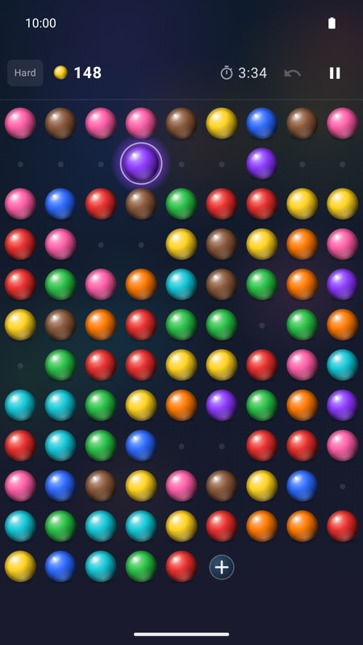
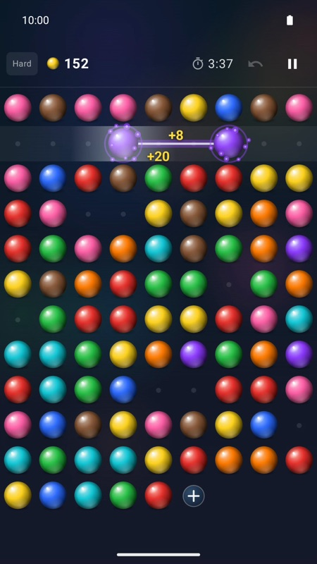
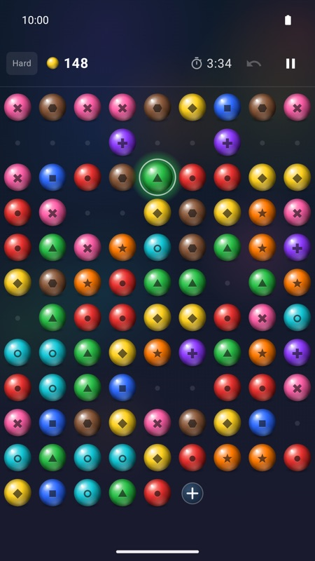

Colored Seeds
Спокойная логическая головоломка для Android: собирайте пары цветных семян, очищайте ряды и всё поле.
Скачать в Google Play


Как играть
- Нажмите на два семени одного цвета, чтобы убрать их.
- Пару можно собрать, если между семенами ничего нет: по строке, по столбцу или от конца одной строки к началу следующей.
- Опустевший ряд исчезает и приносит бонусные очки.
- Ходы закончились? Нажмите «+», чтобы добавить семян, — каждая раздача стоит очков.
- Очистите всё поле, чтобы победить. Чем быстрее, тем больше бонус за время.
Особенности
- Три уровня сложности: 4, 6 или 9 цветов.
- Символы цветов: по желанию на каждом семени появляется фигура — для тех, кому трудно различать некоторые цвета.
- Достижения и таблицы рекордов Google Play Игр.
- Работает без интернета. Без рекламы, покупок и слежки.